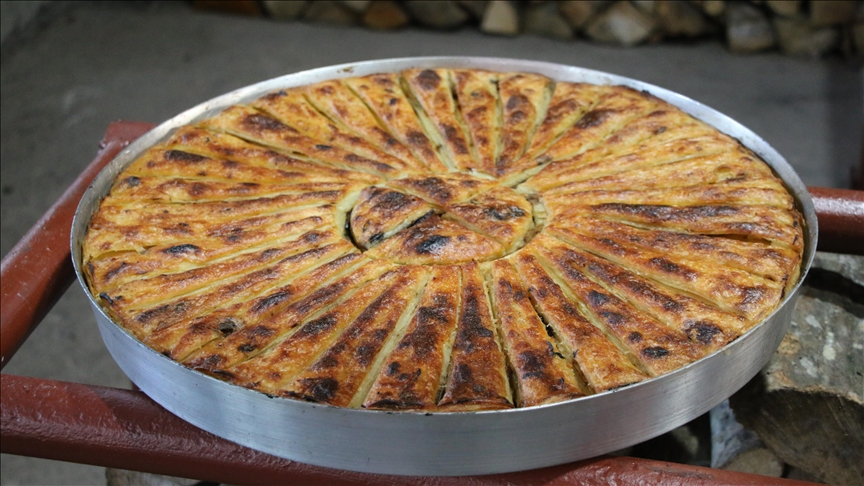
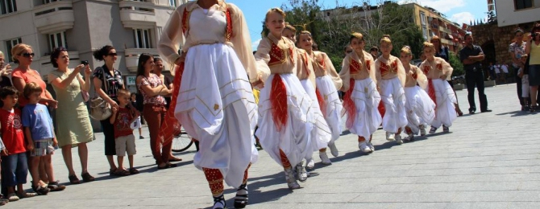
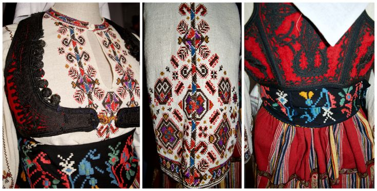

Cultural Insights
Kosovo's culture is a harmonious blend of diverse influences,
reflecting its history and rich traditions. The vibrant spirit of the
Kosovo people is expressed through their hospitality,
warm-heartedness, and dedication to preserving their heritage.

Flija: A traditional layered pastry, often enjoyed
in family gatherings, is one of Kosovo’s most beloved dishes.
Known for its passionate music, Kosovo is home to a variety of folk
songs and traditional dance performances. You might encounter lively
events such as the Gjakova Cultural Festival, or
traditional performances in Prizren's old town.

Gjakova Cultural Festival: This festival showcases
Kosovo’s musical and artistic traditions, attracting thousands of
visitors every year.
The cuisine is another important part of Kosovo's cultural fabric.
Traditional dishes like flija (a layered pastry),
tavë kosi (baked lamb with yogurt), and
pite (savory pie) are popular among locals and
visitors alike. Food is often prepared and enjoyed in community
gatherings, reflecting the importance of sharing meals in Kosovo
culture.

Tavë Kosi: A traditional dish of lamb, yogurt, and
rice, baked to perfection, often served during special occasions.
The arts and crafts are also a vital part of Kosovo’s identity. From
intricate handwoven textiles to
pottery and woodwork, artisans across the country
showcase their skills, often in traditional markets like those in
Prizren, Peja, and Gjakova. The distinct
Rugova embroidery is another symbol of Kosovo's craft
tradition.

Rugova Embroidery: A traditional craft that is
passed down through generations, showcasing beautiful patterns and
designs.
Kosovo is a land rich with legends and stories. One of the most famous
myths is the tale of the Myths of the Dukagjin Plain,
which are passed down through generations. Additionally, Kosovo is
home to some of the most spectacular landscapes, including the Rugova
Valley and the serene lakes of Kosovo, providing endless inspiration
for local folklore.
Throughout Kosovo, you’ll encounter warm, welcoming people, with
strong ties to family and community. Whether you’re exploring urban
centers or rural villages, the cultural hospitality and history of
Kosovo will leave you with unforgettable memories.